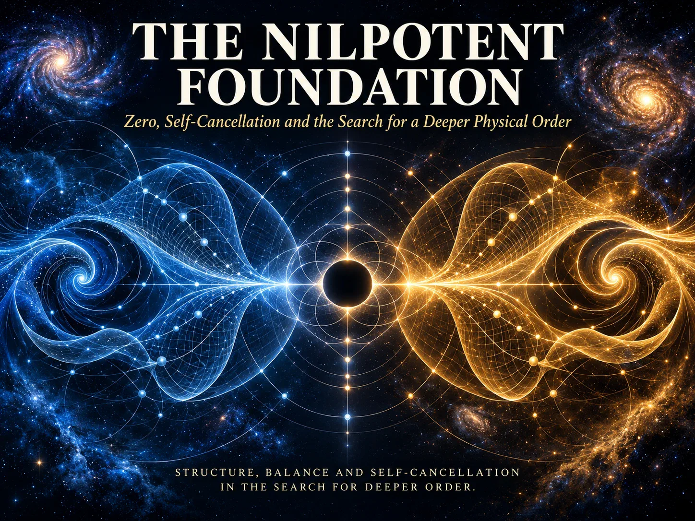
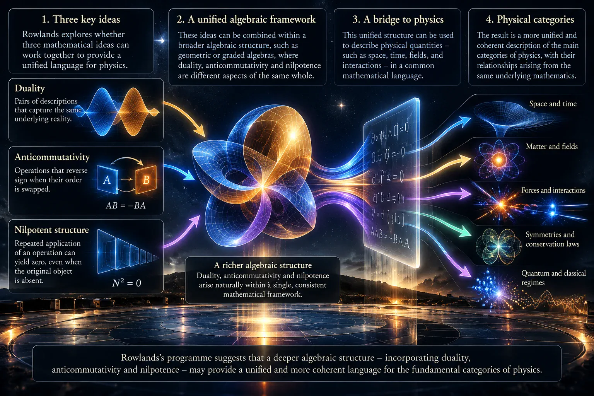
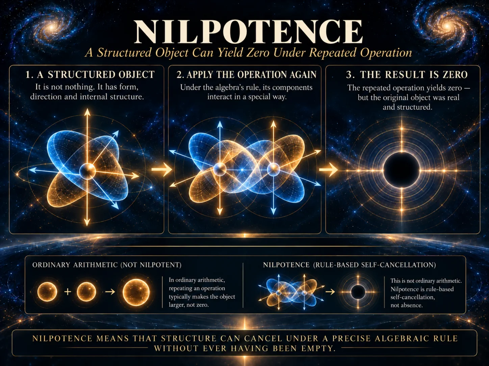
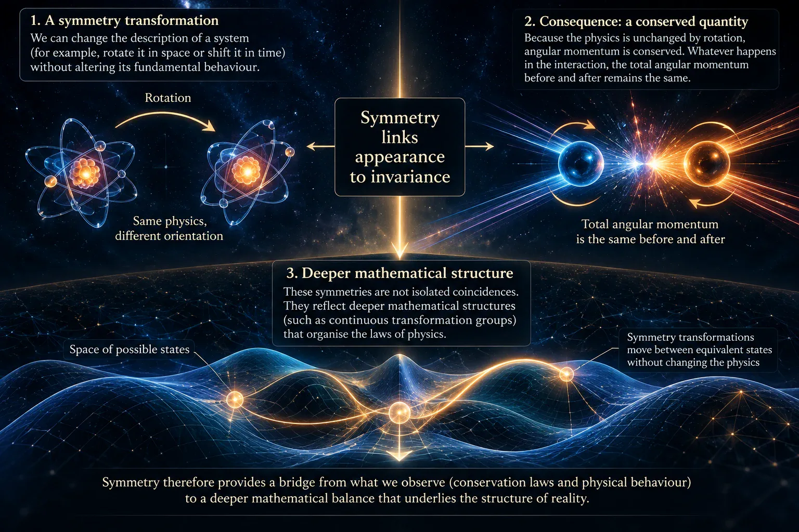
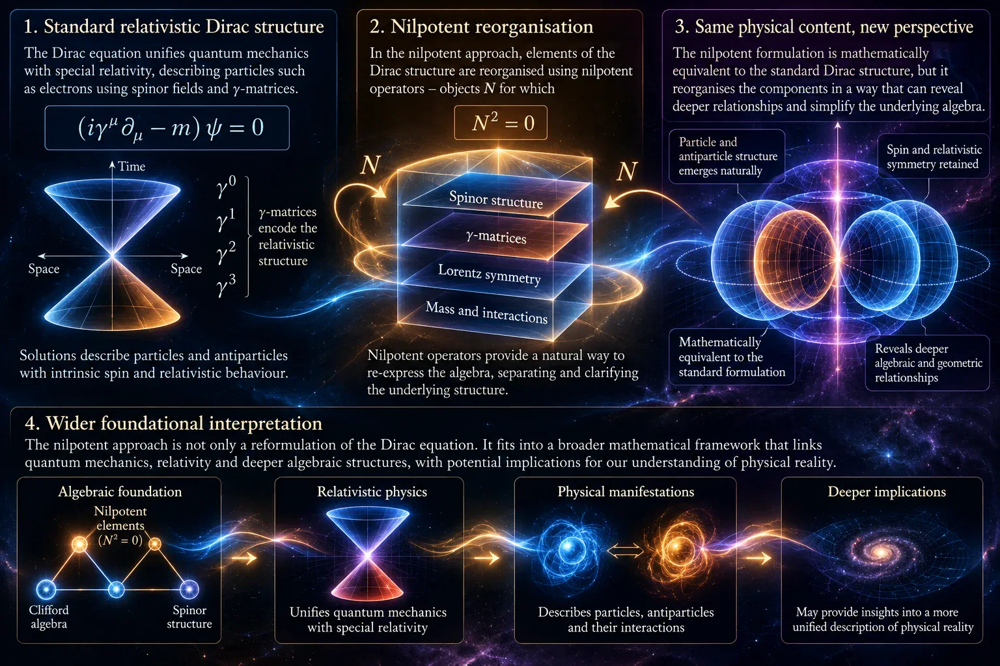
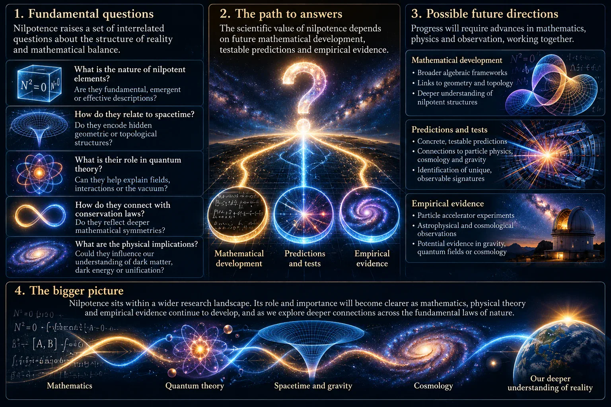
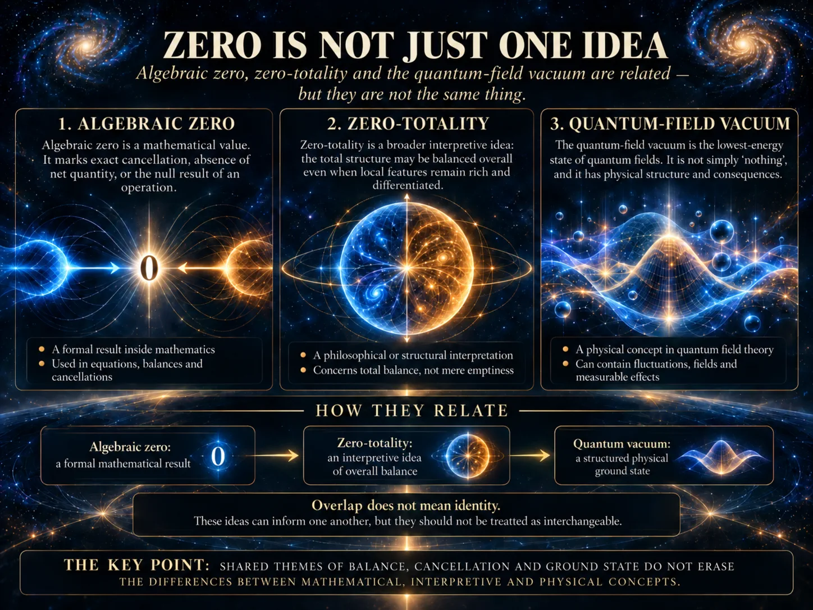

The Nilpotent Foundation
Part III of the SYMMETRIA Discussion Series
September 2026

Cover Illustration: Nilpotence asks whether structured physical relationships can be organised by algebraic forms that vanish under repeated operation, while retaining non-trivial internal structure. The idea provides a visual bridge between symmetry, balance, self-cancellation and the search for a deeper physical order.
1. Introduction
The previous paper considered symmetry as one of physics' most productive organising ideas. Symmetry helps explain why laws remain stable under changes of position, time, orientation or reference frame. Through Noether's theorem, it also reveals deep links between invariance and conservation. Yet symmetry raises a further question. If conservation and structure arise from balanced transformations, might there be a deeper algebraic language for expressing balance itself?
This paper considers one possible language: nilpotence.
The word sounds technical, but the central intuition is approachable. A nilpotent object is not necessarily zero. It may contain structure, act on other objects and carry information. Yet, under a specified multiplication rule, repeated multiplication eventually gives zero. In the simplest case, an object multiplied by itself gives zero.
That is a striking possibility. Ordinary numbers do not behave this way. If two is multiplied by two, the answer is four. If negative two is multiplied by negative two, the answer is also four. Nilpotence belongs to mathematical systems where multiplication has richer rules than ordinary arithmetic.
Why might such a concept matter to physics? Physics already relies on mathematical structures in which order, sign and transformation matter profoundly. Quantum mechanics, relativity and particle physics use matrices, operators, spinors and algebras that cannot always be understood by everyday numerical intuition. Some of these structures involve anticommutation: changing the order of multiplication changes the sign of the result. Such rules are not decorative mathematical complications. They are woven into established descriptions of spin and fermionic particles.
The present discussion is inspired particularly by the work of Peter Rowlands. Rowlands has argued that nilpotent algebra may offer a route to a more unified understanding of particle physics, relativity, vacuum structure and physical duality. His programme gives special importance to what he calls zero-totality: the proposal that apparently distinct physical features may belong to a wider balanced whole.
That proposal should be taken seriously enough to explain accurately, but cautiously enough not to be mistaken for established physics. Nilpotence is established mathematics. The Dirac equation is established physics. The quantum-field vacuum is an established theoretical concept with experimentally supported consequences. Rowlands's wider interpretation of nilpotent structure is a distinctive proposal, not a consensus account of nature.
SYMMETRIA inherits questions from this territory rather than finished answers. It asks whether symmetry, complementarity, constraint and algebraic balance might help clarify how physical structures emerge. It does not claim that nilpotence has already supplied a validated foundation beneath modern physics. Any such claim would require mathematical derivation, recovery of known results, distinctive predictions and experimental tests.
A first distinction is essential because the word zero can mislead.
An algebraic zero is the zero element of a mathematical system. When a nilpotent expression squares to zero, that is a precise formal statement.
Zero-totality, in Rowlands's sense, is an interpretive idea. It suggests that physical distinctions may be complementary aspects of an overall balance. It is not automatically proved whenever an equation produces zero.
The quantum-field vacuum is different again. It is not simply empty space. It is a state of a quantum field theory, usually understood in simple cases as a lowest-energy state. It can have fluctuations, correlations and measurable physical consequences. It must not be casually identified with either algebraic zero or a philosophical idea of total balance.
These distinctions also protect against an opposite error: assuming that formal language is somehow detached from physical insight. Mathematical structures can reveal relations that are difficult to see in ordinary verbal descriptions. But their physical significance must be established step by step. A compact algebraic expression may be a notation, a reformulation, a calculational tool, a new interpretation, or a genuinely new theory. Those possibilities should not be treated as equivalent.
The question of this paper is therefore not whether "everything is nothing". It is more disciplined: can nilpotent structure help us think more clearly about self-cancellation, complementarity and the organisation of physical law?
That question begins with mathematics, moves through Rowlands's interpretation of Dirac structure, and ends with an open research horizon. The attraction of the idea lies not in a promise of easy unification, but in the possibility that physical order may depend as much on precisely constrained relationships as on the individual objects those relationships connect.

Figure 1.1: Symmetry and conservation suggest that apparently separate physical quantities can be linked by deeper mathematical relationships. Nilpotence extends that question by asking whether balance itself can be represented through structured algebraic objects whose combined behaviour ultimately returns to zero.
2. What Is Nilpotence?
The simplest way to approach nilpotence is by asking a counter-intuitive question: can something be non-zero and yet become zero when multiplied by itself?
In ordinary arithmetic, the answer is no. A non-zero real number squared remains positive. But mathematics contains many systems beyond ordinary numbers. In these systems, an object may have several components, multiplication may depend on order, and special combinations may cancel through the rules of the algebra.
An object (N) is called nilpotent if some positive power of it vanishes:
Nk = 0
for some integer (k). If (N2 = 0), it is called square-zero. The object itself need not be zero. The important point is that its multiplication has been defined within a particular algebraic setting.
A simple example can be found in matrix mathematics. Consider a matrix that moves information in one direction but has no route for moving it onward a second time. The matrix can act non-trivially on a vector, yet applying it twice produces the zero matrix. There was structure in the first action; the zero appears only after the operation is repeated.
This helps correct a common misunderstanding. Nilpotence is not the claim that a thing cancels itself in the everyday sense. It is not like adding plus one and minus one. Addition and multiplication are different operations. A nilpotent result is normally multiplicative, and may depend on signs, imaginary units, matrix structure or anticommuting elements.
Ordinary cancellation also commonly leaves a trace in the form of the operation that produced it: two quantities may sum to zero while remaining separately identifiable in a larger expression. Nilpotence is different. It concerns the multiplication rule internal to an algebraic object or operator. The result may vanish because components that are not individually zero generate compensating cross-terms, or because the algebra restricts repeated action. Thus the statement (N2 = 0) does not mean that two ordinary copies of a physical object have annihilated each other. It means that a precisely specified product has a zero value.
A useful but limited analogy is a system of balanced forces. Two equal forces acting in opposite directions can produce no net acceleration even though both forces are physically real. Likewise, a nilpotent expression can have internal structure while producing a vanishing result under a particular operation. But force balance remains an additive physical picture, whereas nilpotence is a formal multiplicative property. The analogy should illuminate only the basic point: zero need not mean absence.
The deeper structure appears when multiplication does not commute. Ordinary numbers commute: (ab = ba). In certain algebras, however, changing the order changes the result. Two objects may anticommute:
ab = −ba
If this relation holds, then (ab + ba = 0). Anticommutation is a standard mathematical feature of Clifford algebras and of the algebraic machinery used in quantum theory. It is especially important in the treatment of fermions, particles such as electrons and quarks that obey the Pauli exclusion principle.
The ordering of terms therefore matters. A nilpotent form may depend upon components that combine differently when their sequence is reversed. This is why loose imagery of "opposites cancelling" is inadequate. The central issue is not merely opposition but rule-governed structure.
Nilpotent objects appear across established mathematics. They occur in linear algebra, matrix theory, geometry and abstract algebra. They also appear in theoretical physics, including methods involving fermionic degrees of freedom and differential geometry. Their mathematical legitimacy is not in question.
It is equally important to recognise that nilpotence alone does not select a physical interpretation. Many formal systems admit nilpotent elements, and not every such element corresponds to a particle, process or measurable feature of the world. The relevant questions are always contextual: what algebra is being used, what do its elements represent, and what operational consequences follow from the representation?
The physical interpretation is another matter. A mathematical expression can be beautiful, compact and useful without revealing a new ontology. To become a physical theory, a nilpotent formulation would need to specify what its objects represent, how they evolve, how they interact and how measurable quantities are extracted. It would need to recover the tested predictions of existing theories in the domains where those theories work.
This distinction is especially important because mathematics can offer multiple equivalent descriptions of the same physical content. One representation may make symmetry obvious; another may simplify calculation; another may highlight conservation. Nilpotence may sometimes be a powerful representation without thereby becoming the uniquely fundamental language of reality.
The implication is not that nilpotence is merely formal. Formal structures often guide major advances in physics. Dirac's relativistic equation predicted antimatter before positrons were observed. Gauge symmetry became central to the Standard Model. Geometry transformed gravity in Einstein's general relativity. The lesson is subtler: mathematical promise becomes physical knowledge only when derivation, interpretation and evidence converge.
The open question is therefore precise. Under what conditions does a nilpotent algebraic form describe an established feature of physics, and under what conditions might it yield something genuinely new?

Figure 2.1: A nilpotent object is not simply nothing. It can contain structure, relationships and information, yet repeated multiplication under the rules of its algebra can produce zero. This distinction between structured cancellation and simple absence is central to the nilpotent idea.
3. Peter Rowlands and the Search for Foundations
Peter Rowlands has pursued a long-running attempt to place nilpotent algebra near the foundations of physics. His work is motivated by dissatisfaction with treating familiar physical categories as simply given. Rather than beginning with particles, forces, space, time, mass and charge as separate ingredients, he asks whether they can be understood through more basic dualities and algebraic relationships.
The ambition resembles a recurring scientific impulse. Newton sought common laws for terrestrial and celestial motion. Maxwell united electricity and magnetism. Einstein recast gravity through spacetime geometry. Dirac connected quantum mechanics with special relativity. In each case, a new structure did not merely combine known facts; it changed the conceptual language in which those facts were understood.
Rowlands's programme seeks a similarly foundational reorganisation, centred on what he describes as zero-totality. In broad terms, this is the idea that physical distinctions may be accompanied by complementary counterparts so that the total description has a zero-like balance. It is closely connected to duality, complementarity and the role of the vacuum.
This should not be confused with the proposition that the observable universe is literally featureless or that every measurable quantity sums simply to zero. Nor is it a settled cosmological conclusion. Rowlands's zero-totality is best understood as a proposed organising principle: physical reality may be structured through paired and complementary relations rather than through isolated positive entities.
His work also gives importance to anticommutativity. Where ordinary multiplication is insensitive to order, anticommutative algebra introduces directional and sign-sensitive relationships. Rowlands connects this with fundamental oppositions and with the algebraic structure needed for relativistic quantum theory.
One reason his work has attracted interest is its attempt to bring several themes into one framework: the relativistic energy-momentum-mass relation, spin, particle-antiparticle structure, vacuum ideas and the Dirac equation. The proposal is not that these topics are unrelated in conventional physics; they are already deeply connected. Rather, Rowlands argues that a nilpotent form may expose their relationship in a particularly direct way.
In his formulation, a suitably organised expression involving energy, momentum and mass can square to zero when the relevant algebraic rules and relativistic conditions are imposed. The construction uses units associated with complex, vector and quaternionic algebra. These mathematical ingredients are arranged so that cross-terms cancel appropriately and the familiar relativistic relation is respected.
The appeal of this approach is conceptual economy. A single nilpotent expression may appear to encode several features usually discussed separately. Rowlands interprets this not merely as compact notation but as evidence that physical structure itself may be fundamentally self-balancing.
That conclusion remains controversial and unconfirmed. A compact representation is not automatically a unique derivation. It may be possible to redistribute algebraic factors, change conventions or translate between equivalent forms without altering observable physics. If so, nilpotence could be an illuminating language without being an unavoidable property of nature.
This brings us to an important contrast: nilpotent and idempotent forms. A nilpotent object becomes zero under repeated multiplication. An idempotent object remains unchanged: (P2 = P). Both can be useful in algebraic physics. In some contexts, related physical content may be packaged in nilpotent or idempotent ways depending on where operators and states are placed.
The deeper question is therefore not simply whether a nilpotent formulation exists. It is whether the formulation is uniquely selected by clear principles and whether it produces consequences that alternative formulations cannot match. A persuasive foundational account must show more than formal consistency. It must clarify why its structure is necessary, what assumptions it replaces, and how its interpretation connects with observation.
Rowlands's work deserves a fair reading because it asks genuine foundational questions. What does it mean for a particle to be represented by a state rather than conceived as a tiny classical object? How should the vacuum be understood? Are charge, mass, space and time independent primitives, or manifestations of a smaller algebraic order? Can duality be more than a descriptive convenience?
At the same time, the standards for success remain demanding. A foundational programme must define its axioms, identify its mathematical domain, explain interactions and many-particle states, recover standard results and provide a route to falsifiable predictions. It must distinguish what has been derived from what has been assumed in advance.
Rowlands inspired aspects of SYMMETRIA, but he did not author or endorse SYMMETRIA. The questions developed here are therefore not claims made on his behalf. They are an invitation to investigate whether nilpotent ideas can be sharpened, tested or shown to have limits.

Figure 3.1: Peter Rowlands' programme explores whether duality, anticommutativity and nilpotent structure can provide a more unified mathematical language for physical categories. Within this approach, apparently distinct properties are investigated as complementary elements of a wider algebraic organisation.
4. From Zero to Dirac Structure
The Dirac equation is among the great achievements of twentieth-century theoretical physics. Developed by Paul Dirac in 1928, it combines quantum mechanics with special relativity for particles of spin one-half. It describes electrons and related fermions with remarkable success and anticipated the existence of antimatter.
The equation transformed the meaning of a particle state. A relativistic electron could no longer be represented adequately by a simple scalar wave. It required a spinor: a mathematical object with several linked components that transform in a distinctive way under rotations and changes of reference frame.
This structure explains familiar but initially surprising features of spin. A spin-one-half state does not behave like a small spinning ball. Its properties are quantum-mechanical and representation-theoretic. Under a full 360-degree rotation, the mathematical state may change sign. Only after a 720-degree rotation does it return fully to its original form. This is not an exotic add-on; it belongs to the established mathematics of spinors.
The conventional Dirac equation also incorporates the relativistic energy-momentum relation:
E2 = p2c2 + m2c4
Its matrix structure enables the equation to be first order in both time and space derivatives while remaining compatible with relativity. From this grew a deeper understanding of particle-antiparticle pairs, relativistic quantum fields and the behaviour of fermions.
The standard Dirac framework includes more than the free energy relation alone. It supplies transformation rules, conserved currents, probability interpretation in an appropriate relativistic setting, and a systematic way to couple charged fermions to electromagnetic fields. Within quantum field theory, the Dirac field is quantised, particles and antiparticles are described through creation and annihilation operators, and its predictions are incorporated into a much wider tested structure. These achievements are not inferred merely from the equation's elegance; they are supported by a long record of successful calculation and measurement.
This established physics must be separated from Rowlands's interpretation. The standard Dirac equation is supported by extensive theoretical development and experiment. It is embedded in quantum field theory and the Standard Model. Rowlands's nilpotent treatment is a particular algebraic reformulation related to Dirac structure.
In Rowlands's approach, a combination of energy, momentum and mass terms is arranged with algebraic units so that the expression becomes nilpotent under appropriate conditions. The result is connected with a free fermionic state. The relation to the Dirac equation is central: the proposal is not an arbitrary new symbol system but an attempt to reorganise familiar relativistic quantum content.
The question is what follows from that reorganisation.
At one level, a nilpotent expression can make visible the balance between energy, momentum and mass required by relativistic physics. The square-zero result is not a denial of particle existence. It is an algebraic consequence of the chosen form together with the mass-shell condition.
At a more ambitious level, Rowlands interprets this nilpotence as saying something fundamental about the particle and its relation to the vacuum. The particle is not treated as an isolated entity but as part of a larger complementary structure. This is where algebra becomes interpretation.
The distinction matters because standard quantum theory does not say that particles simply "cancel themselves into nothing". A Dirac spinor is a state within a well-defined formalism. Its measurable properties include charge, spin, energy and momentum. The nilpotent packaging may encode these properties differently, but it does not automatically replace the conventional physical interpretation.
Equivalence also has several levels. Two expressions may be algebraically convertible while differing in convenience, clarity or domain of application. They may reproduce the same free-particle spectrum but require further work to handle interactions. Stronger claims require stronger demonstrations: agreement of propagators, scattering amplitudes, gauge couplings, normalisation conventions and quantum statistics. A reformulation that recovers all of these may be valuable; one that changes them must show why the established successes are retained.
Alternative formulations can nonetheless be scientifically valuable. They may reveal hidden symmetries, make certain derivations more transparent, or expose assumptions obscured by customary notation. History offers examples. Heisenberg's matrix mechanics and Schr�dinger's wave mechanics initially looked very different but were shown to be equivalent descriptions of quantum theory. Feynman's path-integral approach later offered another powerful viewpoint.
For a nilpotent Dirac formulation to advance beyond reinterpretation, it would need to show what it handles better. Can it derive known quantum numbers more transparently? Can it explain the organisation of gauge interactions? Can it clarify renormalisation, vacuum effects or particle generations? Can it make predictions where conventional methods are silent?
Those are difficult questions, especially once interactions are included. A free-particle construction is not yet a complete field theory. Realistic physics requires scattering, bound states, quantum corrections, multiple particles and compatibility with causality and locality. It also requires a reliable account of how amplitudes, probabilities and observables are calculated.
The implication is balanced. Rowlands's use of nilpotence is meaningfully connected to established Dirac structure. But the claim that nilpotence reveals the final ontology of matter remains open. A reformulation becomes a deeper theory only when its additional structure earns explanatory or predictive necessity.

Figure 4.1: The nilpotent approach reorganises aspects of relativistic Dirac structure into an algebraic form in which self-cancellation becomes explicit. The mathematical construction is intriguing, but its broader interpretation as a foundational description of nature remains subject to detailed derivation and physical scrutiny.
5. What Might the Nilpotent Be Telling Us?
The most interesting questions raised by nilpotence concern not merely algebra but interpretation. If a physical expression can be organised so that its square vanishes, should this be read as a clue about reality, or simply as a useful mathematical arrangement?
One possible lesson concerns complementarity. Physics is already full of paired descriptions: particle and antiparticle, positive and negative charge, position and momentum, field and source, local measurement and global state. These pairs are not all identical, and they should not be forced into a single metaphor. Yet they suggest that physical concepts often acquire meaning through relationship rather than isolation.
Complementarity should not be mistaken for simple opposition. Position and momentum, for example, are represented by noncommuting observables and are constrained by quantum uncertainty; they are not two quantities that cancel to zero. Particle and antiparticle are related through relativistic quantum field theory but can have different charges and physical histories. A useful foundational account must specify which relation is being claimed in each case: algebraic duality, symmetry transformation, conservation law, dynamical pairing or interpretive contrast.
Rowlands's zero-totality extends this intuition. It proposes that apparent physical entities may be understood as differentiated aspects of an overall balance. In this picture, a particle is not a self-contained object sitting in an otherwise empty arena. It is accompanied by a complementary structure connected with the vacuum.
This is a provocative idea because the vacuum is already one of the least intuitive concepts in modern physics. In quantum field theory, empty space is not simply nothing. Fields remain present even in their lowest-energy state. Quantum fluctuations and correlations have observable consequences in carefully defined situations. The Casimir effect, for example, reflects changes in the allowed field modes between conducting surfaces, though simplistic descriptions of "virtual particles pushing plates together" can obscure the underlying field-theoretic calculation.
The vacuum is therefore physically significant, but it is not automatically a universal reservoir that cancels every particle into a global zero. Quantum field theory defines vacua within specific mathematical and physical contexts. In curved spacetime, accelerating frames or cosmological settings, even the idea of a unique vacuum can become subtle.
Vacuum language also requires care because measured effects generally concern differences, boundary conditions, correlations or responses rather than direct observation of a featureless background in isolation. A vacuum expectation value, a ground state and a cosmological energy density are related notions in some theories but are not interchangeable. Any proposal that gives the vacuum a complementary algebraic role must therefore identify which vacuum state it means, how that state is defined, and how its proposed partner relation affects measurable observables.
This is why algebraic zero, zero-totality and vacuum must remain distinct.
An algebraic zero is exact within a defined formal operation.
Zero-totality is an interpretive principle about the significance of complementary physical structure.
A quantum-field vacuum is a state whose properties depend on the theory, spacetime background and observer-related structure under consideration.
Confusing these levels would create apparent depth at the cost of precision. It would also prevent productive criticism, because a mathematical identity, a philosophical interpretation and a physical state are evaluated in different ways. The first requires proof within its algebra. The second requires conceptual coherence. The third requires a theory connected to measurement.
The deeper potential of nilpotence may instead lie in asking better questions about conservation. Noether's theorem tells us that continuous symmetries are linked to conserved quantities. Energy conservation, momentum conservation and angular-momentum conservation are not arbitrary bookkeeping rules. They reflect structural features of physical law.
Could nilpotent balance provide another way of thinking about why conservation is so central? Perhaps, but this remains a question rather than a result. Noether's theorem does not require zero-totality. Established conservation laws do not wait for a nilpotent reinterpretation to become valid. Any deeper account would need to reproduce Noether's results exactly where they apply and explain what additional insight is gained.
A related question concerns asymmetry. If totality were balanced in some global sense, why is the universe so richly differentiated? Why do particles have distinct masses and charges? Why does matter dominate over antimatter in the observable cosmos? Why are there stars, galaxies, chemistry and living systems rather than featureless equilibrium?
The previous paper offers part of the conceptual answer: symmetry and broken symmetry coexist. Laws may be highly symmetrical while actual physical states select particular outcomes. A balanced framework would therefore have to permit local difference, historical evolution and emergent structure. Global balance, if meaningful, could not mean local uniformity.
This leads to a demanding research agenda. A serious nilpotent account of vacuum and complementarity would need clear rules for combining many particles, handling interactions and avoiding double counting. It would need to show how local causality is preserved and how finite measurable quantities arise from formal cancellations. It would need to address gravity and cosmology rather than assuming that a free-particle algebra can simply be extended by analogy.
SYMMETRIA treats these as open questions. It is interested in whether physical organisation might be understood through layered constraints, symmetry breaking and complementary relations. But conceptual attraction cannot substitute for derivation. A proposal about vacuum order must become mathematically explicit. A proposal about conservation must yield identifiable quantities. A proposal about emergence must connect with known dynamics.
The nilpotent may therefore be telling us something modest but important: zero is not always emptiness. A vanishing result can arise from rich structure. Whether that lesson ultimately belongs to the foundations of physics remains unresolved.

Figure 5.1: Algebraic zero, Rowlands' idea of zero-totality and the quantum-field vacuum occupy related conceptual territory, but they are not interchangeable. Distinguishing these meanings of zero is essential if mathematical cancellation is to be connected responsibly with established physical theory.
6. From Rowlands to SYMMETRIA
The journey from Rowlands's nilpotent programme to SYMMETRIA is not a transfer of established conclusions. It is a transfer of questions.
Rowlands's work encourages a symmetry-first approach to foundational physics. It asks whether space, time, mass, charge, spin and vacuum structure may be more tightly related than they appear in ordinary descriptions. It treats duality and anticommutation as potentially fundamental rather than merely technical. It proposes that nilpotent Dirac structure may reveal a deeper algebraic balance.
SYMMETRIA inherits the intellectual challenge of these ideas. It asks whether physical reality may emerge through relationships of symmetry, constraint, complementarity and transformation. It explores whether apparently separate structures might be organised by more basic principles. But it must establish every extension for itself.
That means several boundaries must remain visible.
Established physics retains its authority because it has earned it through mathematical development and experiment. Quantum field theory, relativity, the Standard Model and Noether's theorem are not provisional simply because deeper questions remain.
Rowlands's nilpotent proposals are substantial theoretical interpretations and constructions that deserve examination on their own terms. They are not, however, universally accepted as a completed unification of physics.
SYMMETRIA is exploratory. It may use nilpotence as a conceptual resource, but it cannot claim Rowlands's work as its own discovery, nor imply his endorsement. Its task is to convert broad intuitions into disciplined problems.
The table below summarises that task.
Table 6.1 – Nilpotence: Questions and Tests
| Reference point | Nilpotent question | Evidence of progress |
|---|---|---|
| Noether symmetry and conservation | Can nilpotence recover conservation laws? | Derive the known conserved quantities. |
| Relativistic Dirac theory | Does reformulation add explanatory power? | Recover observables and yield useful new results. |
| Quantum-field vacuum | Can zero-totality be defined physically? | Build a consistent model with observable consequences. |
| Symmetry breaking and emergence | Can algebraic balance generate realistic structure? | Reproduce known physics and predict deviations. |
| Scientific testability | Is the content more than notation? | Make a falsifiable quantitative prediction. |
For SYMMETRIA, derivation would have to begin with explicit commitments rather than suggestive language. It would need to define the relevant algebra, its generators, multiplication rules and transformation properties. It would need to state whether nilpotence applies to states, operators, fields or composite expressions, and identify the physical meaning assigned to each. It would then need to recover familiar limits: relativistic free particles, quantum probabilities, conserved quantities and known interaction behaviour.
Testing presents an equally strict requirement. If SYMMETRIA produces only a change of notation, its contribution may be conceptual or pedagogical but not a new empirical theory. If it claims additional physical content, it must identify a calculation that differs from standard methods: a spectrum, scattering process, vacuum response, cosmological signature or other quantitative observable. The difference must be precise enough that agreement or disagreement with data could matter.
The central implication is straightforward. Nilpotent ideas should neither be dismissed because they are unfamiliar nor accepted because they are elegant. Their value lies in the questions they sharpen.
A constructive programme would proceed in stages. It would first state its algebra and assumptions unambiguously. It would then demonstrate equivalence with established results where equivalence is claimed. Only after that foundation is secure could it identify genuinely new implications. Such discipline is not an obstacle to imaginative theory; it is what allows imagination to become scientifically assessable.
Can a non-trivial zero reveal hidden structure? Can complementary relations help explain why conservation is so pervasive? Can the vacuum be described more coherently without confusing mathematical cancellation with physical emptiness? Can a reformulation of Dirac theory lead to a more complete treatment of interactions, gravity or cosmology?
These are questions worth asking. They are not yet answers.
The next paper turns to a broader issue that sits behind every attempt at foundational physics: why should mathematical structures describe reality so effectively at all? If nilpotence suggests that mathematical form may carry unexpected physical meaning, then the deeper challenge is to understand the relationship between mathematics, elegance and the world it seeks to describe.

Figure 6.1: Nilpotence offers a structured set of questions about balance, complementarity and physical organisation. Its scientific value will depend not on mathematical elegance alone, but on rigorous development, recovery of established results, distinctive predictions and ultimately comparison with experimental evidence.